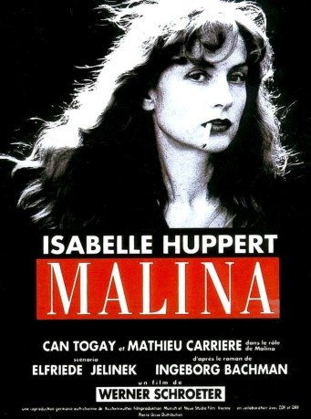
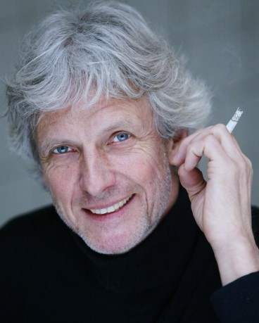
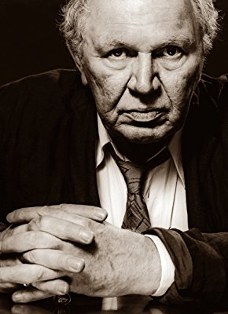

#8294 Malina
 
 IMDB-Wertung: 6.7 / 10
IMDB-Wertung: 6.7 / 10  Metascore: 0
Metascore: 0 
Ich habe in Ivan gelebt und ich sterbe in Malina. In der Ungargasse im dritten Wiener Bezirk lebt eine etwa vierzigjährige Schriftstellerin, sie teilt sich die Wohnung seit vielen Jahren mit Malina. Sie hat sich durch ihr Wirken Bekanntheit erarbeitet, doch durch die fernen Räume, in die sie sich für ihre Kunst begeben muss, ist die Wirklichkeit ihr fremd geworden. Ihr Leiden an sich und der Welt wirft sie immer mehr auf ihr kleines "Ungargassenland" zurück. Malina und sie gelten als Paar - doch was für ein Paar sind sie? Teilen sie sich die Räume in platonischer Freundschaft? Ist Malina homosexuell, gleichgültig, nur ein Freund? Ihr Verhältnis ist schicksalhaft, sie mussten sich kennenlernen, Malina, der Ratio und Kälte repräsentiert und sie, mit ihren Obsessionen und ihrer dunklen Seite.
Jahr: 1991
Dauer: 125 Minuten
FSK: 16
Land: Deutschland Studio: Concorde Home EntertainmentTonspuren:
Untertitel: Deutsch,
Auflösung: 1080p (1920x1080) Größe: 8130 MB
Genre: Drama, Fantasy, Liebe, Mystery
Regisseur: Werner Schroeter
Drehbuch: Elfriede Jelinek
Soundtrack: Giacomo Manzoni
Darsteller:
 Isabelle Huppert als Die Frau
Isabelle Huppert als Die Frau Lisa Kreuzer als Die Frau
Lisa Kreuzer als Die Frau-  Mathieu Carrière als Malina
 Isolde Barth als Mutter
Isolde Barth als Mutter- Wiebke Frost als Schwester der Frau
-  Haymon Maria Buttinger als Blinder
- Oana Solomon als Ungeduldige Frau
- Can Togay als Ivan
- Fritz Schediwy als Vater
- Libgart Schwarz als Fräulein Jellinek
- Elisabeth Krejcir als Lina
- Peter Kern als Bulgare
- Jenny Drivala als Opernsängerin
- Lolita Chammah als Kind
- David Philipp Kotai als Ivans Kind Bela
- David Salomonowitz als Ivans Kind Andras
- Andre Mueller als Herr Mühlbauer
- Kinskim Idl Graf als Graf Altenwyl
- Gerhild Didusch als Antoinette Altenwyl
- Sabine Schmeller als Hausmädchen bei den Altenwyls
- Nicolin Kunz als Frau mit Revolver
- Hanno Pöschl als Briefträger
- Fritz von Friedel als Ober Franz
- Daniela Leupold-Löwenthal als Zarin Melanie
- Stefan Holzer als Junger Bardos
- Grete Öschlmüller als Alte Frau
- Bernd Stegemann als Veranstalter
- Brigitte Antonius als Direktrice bei Braun
- Sascha Ploner als Lehrling bei Braun
- Marika Adam als Frau des Blinden
- Stephan Hruza als Der kleine Pepi
- Gertrud Roll als Kellnerin
- Hermann Schmid als Mann in der Telefonzelle
- Chris Stanger als Mann im Park
- Stef Sachwein als Frau im Park
- Tomma Wember als Andere Frau von Ivan
- Peter Appiano als Polizist Funkstreife
- Sudesh Prashad als Anderer Fremder
- Michaela Fabrick als Sängerin auf dem Klavier
- Diego L��on Patarroyo als Geiger
- Alan Goodson als Ivan's Friend (uncredited)
Datei: X:\1991\Malina (1991, FSK16, 1920x1080).mkv seit 20.02.2018
Festplatte: HD 1987-1991
 Es gibt insgesamt 53 Filme in der Gruppe '1991'
Es gibt insgesamt 53 Filme in der Gruppe '1991'